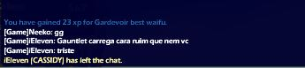

Neeko
Quem é?
Neeko é um jogador competitivo de brawlhalla, sendo conhecido na comunidade e respeitado
Muitos dizem que jogar contra o Neeko é uma tristeza, e é verdade. Quando Neeko joga, seus movimentos são friamente calculados, junto com seus ataques, como podemos ver nesse video!